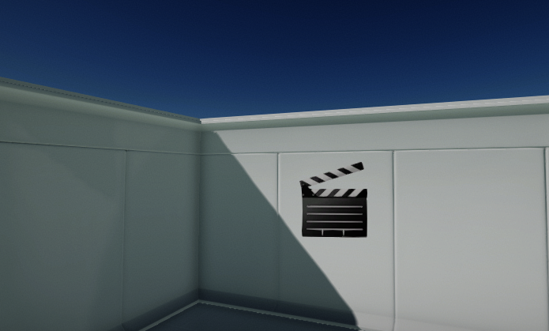
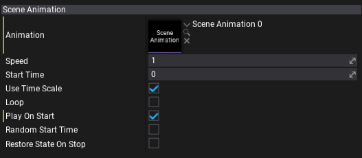

Scene Animation Player

Scene Animation Player is an actor type that can playback the Scene Animation sequence. It can play it on start or after calling a play from the script. The playback speed and looping options can be adjusted.
Restoring state on end
Scene Animation Player supports caching the animated objects state on play start and restoring it on the end. This can be useful in certain gameplay situations. To enable it simply check the Restore State On Stop option. If used the playback start will take longer since the state has to be cached (additional memory allocation and the processing of the data).
Properties

| Property | Description |
|---|---|
| Animation | The scene animation to play. |
| Speed | The animation playback speed factor. Scales the timeline update delta time. Can be used to speed up or slow down the sequence. |
| Start Time | The animation start time. Can be used to skip part of the sequence on begin. |
| Use Time Scale | Determines whether the scene animation should take into account the global game time scale for simulation updates. |
| Loop | Determines whether the scene animation should loop when it finishes playing. |
| Play On Start | Determines whether the scene animation should auto play on game start. |
| Random Start Time | Determines whether the scene animation should randomize the start time on play begin. |
| Restore State On Stop | Determines whether the scene animation should restore initial state on playback stop. State is cached when animations stats play after being stopped (not paused). |